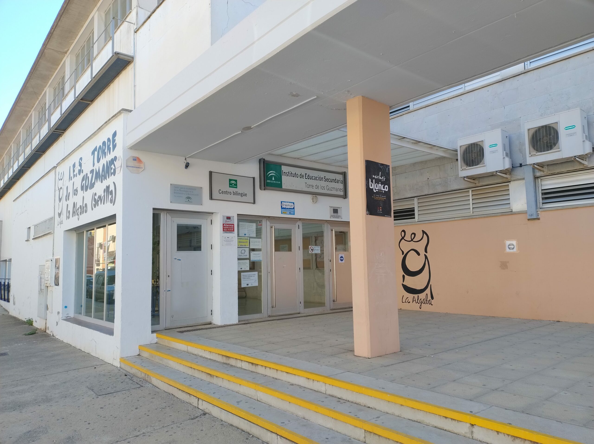

Técnico Superior en Desarrollo de Aplicaciones Multiplataforma (DAM)

Datos del centro
Centro: IES torre de los Guzmanes.
Ubicación: La Algaba. Sevilla.
Web del Centro: IES Torre de los Guzmanes
Datos del grado
Nombre:desarrollo de plicaciones Multiplataforma.
Nivel:Ciclo Formativo de Grado Superior
Familia profesional: Informática y Comunicaciones
Duración: 2 cursos académicos, 2000 horas
Modalidad: Presencial
Titulación: Técnico Superior en Desarrollo de Aplicaciones Web
Descripcion
Este ciclo forma profesionales capaces de desarrollar, implantar y mantener aplicaciones multiplataforma, tanto en la parte que ve el usuario (cliente) como en la parte que funciona en el servidor, utilizando lenguajes de programación, bases de datos y herramientas actuales.
Asignaturas (módulos profesionales)
Primer curso
-
Sistemas Informáticos (192 h): instalación y configuración de sistemas operativos y redes básicas.
-
Bases de Datos (192 h): diseño de bases de datos y manejo del lenguaje SQL.
-
Programación (256 h): fundamentos de programación y programación orientada a objetos.
-
Lenguajes de Marcas y Sistemas de Gestión de Información (128 h): HTML, CSS, XML y gestión de datos.
-
Entornos de Desarrollo (96 h): herramientas para programar, probar y documentar software.
-
Formación y Orientación Laboral (96 h): derechos laborales, prevención de riesgos y búsqueda de empleo.
Segundo curso
-
Desarrollo en Entorno Cliente: programación con JavaScript en el navegador.
-
Desarrollo en Entorno Servidor: programación de aplicaciones que se ejecutan en el servidor (por ejemplo, PHP).
-
Despliegue de Aplicaciones multiplataforma: publicación y configuración de servidores web.
-
Diseño de Interfaces multiplataforma: diseño visual, accesibilidad y usabilidad.
-
Empresa e Iniciativa Emprendedora: creación y gestión de una pequeña empresa.
-
Proyecto de Desarrollo de Aplicaciones multiplataforma: trabajo final que reúne todo lo aprendido.
-
Formación en Centros de Trabajo (FCT) (unas 370 h): prácticas en una empresa real.
Salidas profesionales
- Desarrollador/a multiplataforma (front-end, back-end o full stack)
- Programador/a de aplicaciones multiplataforma
- Administrador/a de sitios web
- Diseñador/a de interfaces web
Continuación de estudios
Con este título se puede acceder a la universidad (grados universitarios),
a otros ciclos de grado superior o a cursos de especialización.
Más información oficial en el portal
TodoFP.
Requisitos de acceso
- Título de Bachiller, o
- Título de Técnico de grado medio, o
- Prueba de acceso a grado superior